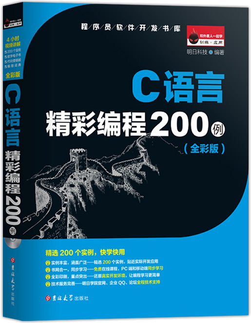

首页 > 书籍下载
《C语言精彩编程200例》全彩版PDF下载（高清完整版）
|  | 作者：明日科技 |
| 出版时间：2022年02月01日 | |
| 出版社：吉林大学出版社 | |
| 书号ISBN：9787569208696 | |
| 总页数：432 | |
| 总字数：85W |
这是一本非常经典的 C 语言实操书籍，书中汇集了 200 个 C 语言实例，每个实例都是经过一线工程师精心挑选的，适合正在学习 C 语言的读者练手使用。
这里提供的是《C语言精彩编程200例》全彩版的高清 PDF 下载，内容完整，附带目录标签。
这本书汇集的实例，涵盖常用算法、指针操作、链表操作、文件操作、系统相关、图形图像和游戏开发等方面的内容，每个实例都进行了详细的解析，包括用到的关键技术、实现过程和扩展学习等。
一位正在学习 C 语言的读者，买了这本书后这样评价：
非常好的一本书籍，从简单的实例到略微有点复杂的实例，最后到项目实例，由浅入深。
另外一位读者也给出了好评：讲解详细，贴近实际编程，有很多的常用算法介绍，知识点总结的也很全面，图例清晰，加强记忆，能够很快的融入学习环境，是学习程序语言的好帮手。
书籍目录
- 第1章 常用算法
- 实例001 将十进制数转换为二进制数
- 实例002 输出一个正方形
- 实例003 求两个数的和
- 实例004 三个数由小到大排序
- 实例005 猴子摘桃
- 实例006 计算某日是该年的第几天
- 实例007 婚礼上的谎言
- 实例008 百元买百鸡
- 实例009 打鱼晒网问题
- 实例010 小球下落问题
- 实例011 巧分苹果
- 实例012 老师分糖果
- 实例013 判断闰年
- 实例014 黑纸与白纸
- 实例015 阿姆斯特朗数
- 实例016 水池注水问题
- 实例017 求学生总成绩和平均成绩
- 实例018 检查字符类型
- 实例019 模拟自动售货机
- 实例020 加油站加油
- 实例021 简单计算器
- 实例022 一元钱的兑换方案
- 实例023 打印乘法口诀表
- 实例024 绘制余弦曲线
- 实例025 打印杨辉三角
- 实例026 求总数问题
- 实例027 抽屉原理
- 实例028 灯塔数量
- 实例029 输出10～100之间的素数
- 实例030 爱因斯坦阶梯问题
- 实例031 银行存款问题
- 实例032 计算字符串中的单词个数
- 实例033 选票统计
- 实例034 使用数组统计学生成绩
- 实例035 模拟比赛打分
- 实例036 设计魔方阵
- 实例037 递归解决年龄问题
- 实例038 分鱼问题
- 实例039 分数计算器程序
- 实例040 字符升序排列
- 实例041 在指定的位置后插入字符串
- 实例042 计算学生平均身高
- 实例043 用宏定义实现值互换
- 第2章 指针与链表操作
- 实例044 使用指针实现数据交换
- 实例045 使用指针实现整数排序
- 实例078 输出今天星期几
- 实例079 图的广度优先搜索
- 实例080 用栈及递归计算多项式
- 实例081 输出二维数组的一个元素
- 实例082 取出整型数据的高字节数据
- 实例083 简单的文本编辑器
- 实例084 为具有三个数组元素的数组分配内存
- 实例085 为二维数组动态分配内存
- 实例086 商品信息的动态存放
- 实例087 编写头文件包含圆面积的计算公式
- 实例088 利用宏定义求偶数和
- 实例089 输出二维数组有关值
- 实例090 使用条件编译隐藏密码
- 第3章 文件操作
- 实例091 读取磁盘文件
- 实例092 将数据写入磁盘文件
- 实例093 格式化读写文件
- 实例094 成块读写操作
- 实例095 随机读写文件
- 实例096 以“行”为单位读写文件
- 实例097 将文件内容复制到另一文件
- 实例098 合并两个文件信息
- 实例099 统计文件内容
- 实例100 文件的错误处理
- 实例101 创建文件
- 实例102 创建临时文件
- 实例103 重命名文件
- 实例104 删除文件
- 实例105 删除文件中的内容
- 实例106 关闭打开的所有文件
- 实例046 指向结构体变量的指针
- 实例047 使用指针输出数组元素
- 实例048 使用指针查找数组中的最大值和最小值
- 实例049 使用返回指针的函数查找最大值
- 实例050 使用指针连接两个字符串
- 实例051 用指针实现逆序存放数组元素值
- 实例052 用指针数组构造字符串数组
- 实例053 用指针函数输出学生成绩
- 实例054 寻找相同元素的指针
- 实例055 查找成绩不及格的学生
- 实例056 使用指针的指针输出字符串
- 实例057 使用指向指针的指针对字符串排序
- 实例058 输入月份号输出英文月份名
- 实例059 寻找指定元素的指针
- 实例060 字符串的匹配
- 实例061 比较计数
- 实例062 找出最高分
- 实例063 信息查询
- 实例064 候选人计票程序
- 实例065 使用malloc()函数分配内存
- 实例066 使用共用体存放学生和老师信息
- 实例067 共用体处理任意类型数据
- 实例068 创建单链表
- 实例069 创建双链表
- 实例070 创建循环链表
- 实例071 使用头插入法建立单链表
- 实例072 调用calloc()函数动态分配内存
- 实例073 输出约瑟夫环
- 实例074 创建顺序表并插入元素
- 实例075 合并两个链表
- 实例076 单链表就地逆置
- 实例077 使用指针交换两个数组中的最大值
- 实例107 同时显示两个文件的内容1
- 实例108 文件分割
- 实例109 文件加密
- 实例110 明码序列号保护
- 实例111 非明码序列号保护
- 实例112 凯撒加密
- 实例113 RSA加密
- 第4章 系统相关
- 实例114 固定格式输出当前时间
- 实例115 当前时间转换
- 实例116 显示程序运行时间
- 实例117 设置DOS系统日期
- 实例118 设置DOS系统时间
- 实例119 获取当前日期与时间
- 实例120 获取当地日期与时间
- 实例121 设置系统日期
- 实例122 获取BIOS常规内存容量
- 实例123 读取和设置BIOS计时器
- 实例124 获取CMOS密码
- 实例125 鼠标中断
- 实例126 设置文本显示模式
- 实例127 获取当前磁盘空间信息
- 实例128 备份或恢复硬盘分区表
- 实例129 硬盘逻辑锁
- 实例130 显卡类型测试
- 实例131 获取环境变量
- 实例132 获取系统配置信息
- 实例133 获取寄存器信息
- 实例134 恢复内存文本
- 实例135 绘制立体窗口
- 实例136 控制扬声器声音
- 实例137 获取CapsLock键状态
- 实例138 删除多级目录
- 实例139 字符串复制到指定空间
- 实例140 查找位置信息
- 实例141 复制当前目录
- 实例142 产生唯一文件
- 实例143 不同亮度显示
- 实例144 字母检测
- 实例145 建立目录
- 实例146 删除目录
- 实例147 数字检测
- 实例148 快速分类
- 实例149 访问系统temp中的文件
- 实例150 设置组合键
- 实例151 求相对的最小整数
- 实例152 求直角三角形斜边
- 实例153 小数分离
- 实例154 求任意数n次幂
- 实例155 函数实现字符匹配
- 实例156 任意大写字母转换成小写字母
- 实例157 打印1到5的阶乘
- 第5章 图形图像
- 实例158 绘制直线
- 实例159 绘制表格
- 实例160 绘制矩形
- 实例161 绘制椭圆
- 实例162 绘制圆弧线
- 实例163 绘制扇区
- 实例164 绘制空心圆
- 实例165 绘制正弦曲线
- 实例166 绘制彩带
- 实例167 黄色网格填充的椭圆
- 实例168 红色间隔点填充多边形
- 实例169 绘制五角星
- 实例170 颜色变换
- 实例171 彩色扇形
- 实例172 输出不同字体
- 实例173 相同图案的输出
- 实例174 设置文本及背景颜色
- 实例175 简单的键盘画图程序
- 实例176 鼠标绘图
- 实例177 艺术清屏
- 实例178 图形时钟
- 实例179 火箭发射
- 实例180 左右移动的问候语
- 实例181 正方形下落
- 实例182 跳动的小球
- 实例183 旋转的五角星
- 实例184 变化的同心圆
- 实例185 小球碰撞
- 实例186 绘制圆形精美图案
- 实例187 直线精美图案
- 实例188 心形图案
- 实例189 钻石图案
- 实例190 雪花
- 实例191 太阳花图案
- 第6章 C语言游戏开发
- 实例192 猜数字游戏
- 实例193 打字游戏
- 实例194 弹力球游戏
- 实例195 吃豆游戏
- 实例196 迷宫游戏
- 实例197 俄罗斯方块
- 实例198 推箱子游戏
- 实例199 贪吃蛇游戏
- 实例200 五子棋游戏
- 附录
- 附录1 C语言代码规范
- 附录2 常用字符与ASCII代码对照表
书籍下载
一键登录，免费下载完整版 PDF，文件名称：《C语言精彩编程200例》全彩版.pdf